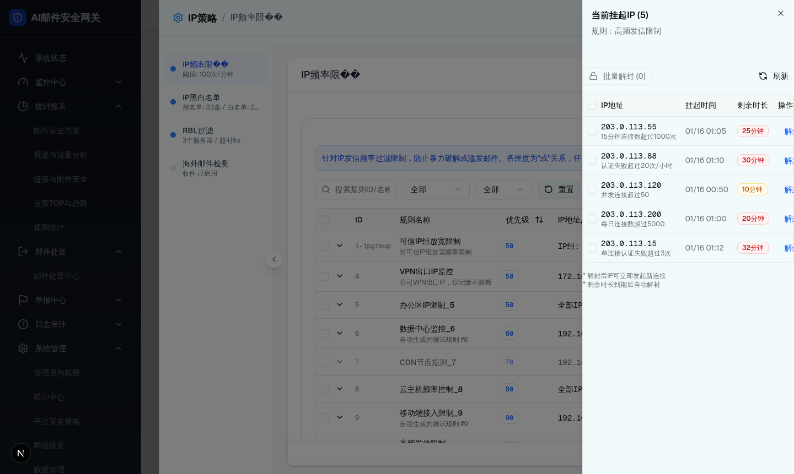

| 所属组件 | SuspendedIpDrawer |
| 触发路径 | 层级1 展开详情 -> 点击“查看挂起IP列表” |
| 浏览器状态 | 右侧嵌套抽屉打开，页面背景遮罩变暗，标题“当前挂起IP (5)”。 |
规则：高频发信限制
| IP地址 | 挂起时间 | 剩余时长 | 操作 |
|---|
* 解封后IP可立即发起新连接
* 剩余时长到期后自动解封

| 元素 | 实际文案/值 | 交互 |
|---|---|---|
| 标题 | 当前挂起IP (5) | 右上角 X 关闭。 |
| 规则说明 | 规则：高频发信限制 | 只读。 |
| 批量解封按钮 | 批量解封 (0) | 未选择 IP 时禁用；选择后点击弹出确认。 |
| 刷新按钮 | 刷新 | 重新加载当前规则的挂起 IP 列表。 |
| 表格列 | 复选框、IP地址、挂起时间、剩余时长、操作。 | 单行“解封”弹出确认，确认后从列表移除。 |
| 比对项 | demo 实际 DOM | 提取 HTML | 是否一致 |
|---|---|---|---|
| 可见标题 | 当前挂起IP (5) | 当前挂起IP (5) | 一致 |
| 根节点/尺寸 | div[role=dialog].w-[500px].sm:w-[600px].sm:max-w-sm；实际 384×861。 | 嵌入同一 outerHTML；仅把 fixed 改为容器内 relative。 | ✅ DOM 一致；定位适配规格页 |
| 子节点/节点数 | directChildren=3，nodeCount=96。 | 3 / 96。 | ✅ 一致 |
| 表格首屏行数 | 5 行挂起 IP。 | 运行态提取块完整包含 5 行。 | ✅ 一致 |
| 截图校验 | 截图清晰显示 203.0.113.55、.88、.120、.200、.15 五行。 | 规格描述包含五行行为。 | 一致 |